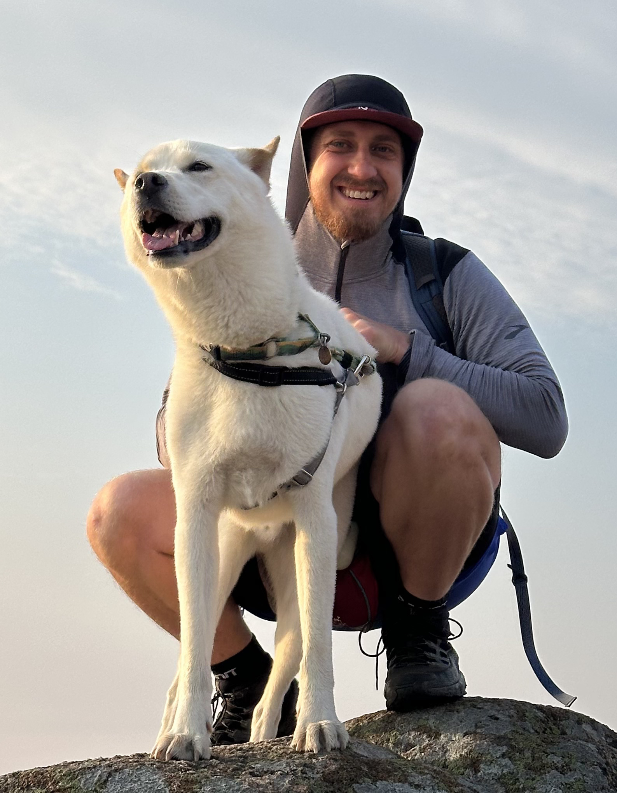

About
Background
I was first introduced to academic research through TAMS, a unique program that allowed high school students to take university courses and work alongside researchers at UNT.
I went on to study computer science and mathematics at UT Austin. Through research experiences there and summer REU programs, I explored different areas of theoretical computer science before eventually finding my way to cryptography.
I later earned my PhD at Cornell, where I was fortunate to work with Rafael Pass. Since then, I've continued my research in cryptography and its applications through postdoctoral positions at several institutions.
I'm currently based in New York City and exploring new opportunities to pursue my interests in research and teaching. Feel free to reach out at codyrfreitag@gmail.com.
CV & Resume
Curriculum Vitae
A comprehensive overview of my academic background, research, teaching, and professional experience.
View CV (PDF) ↗Outside of Work
I enjoy spending time with my dog, Manchego, trying new restaurants and coffee shops, and playing competitive puzzle games like Tetris and Puzzle League.
